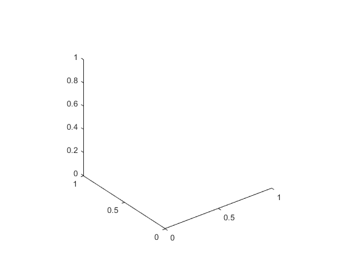
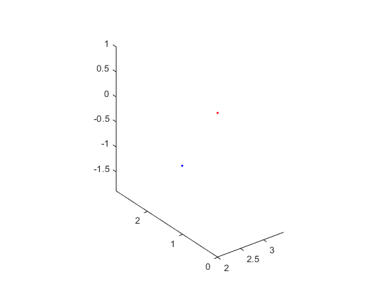
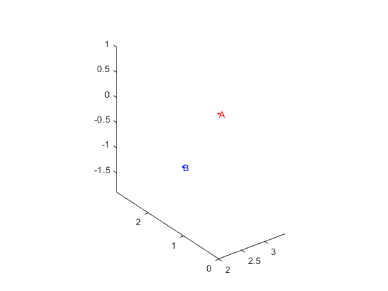
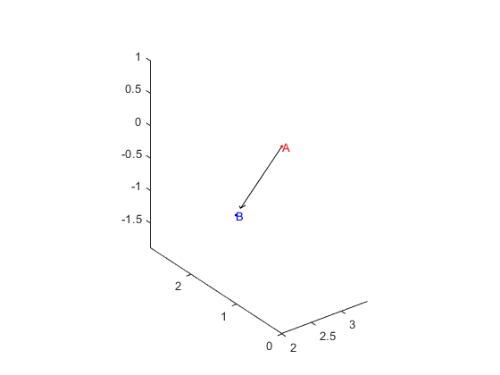
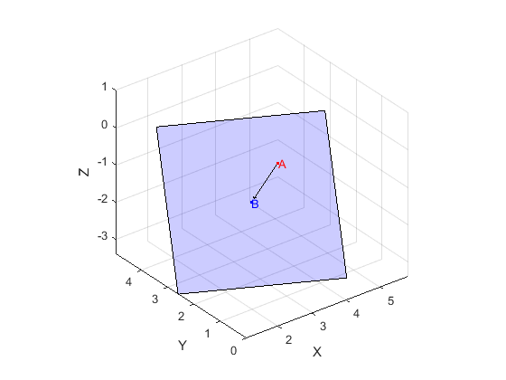

Exercice 3, Visualisation
Contents
Initialisation des variables de l'énoncé:
P1 = [3,4,-1]' P2 = [5, 3, -1]' P3 = [5, 5, 1]' A=[2,0,1]'
P1 =
3
4
-1
P2 =
5
3
-1
P3 =
5
5
1
A =
2
0
1
[u1, u2, n] = BaseR3(P1, P2, P3)
u1 =
0.8944
-0.4472
0
u2 =
0.2981
0.5963
0.7454
n =
-0.3333
-0.6667
0.6667
B = ProjPointPlan(P1, P2, P3, A)
base_pi =
0.8944 0.2981
-0.4472 0.5963
0 0.7454
B =
3.4444
2.8889
-1.8889
B =
3.4444
2.8889
-1.8889
A1 = A(1); A2=A(2); A3=A(3); B1=B(1); B2=B(2); B3=B(3); AB1 = B1-A1; AB2 = B2-A2; AB3=B3-A3;
3.1)
On veut dessiner en 3d
view(3); % Pour afficher plusieurs éléements sur le même plot. hold on % Met tous les axes à la même échelle. axis equal
3.2)
plot3(A(1),A(2),A(3),'.r', B(1),B(2),B(3),'.b');
3.3)
text(A1,A2,A3,'A','Color','r') text(B1,B2,B3,'B','Color','b')
3.4)
quiver3(A1, A2, A3, AB1, AB2, AB3, 'k')
 3.5)
AffichagePlan(B, u1, u2, 4)